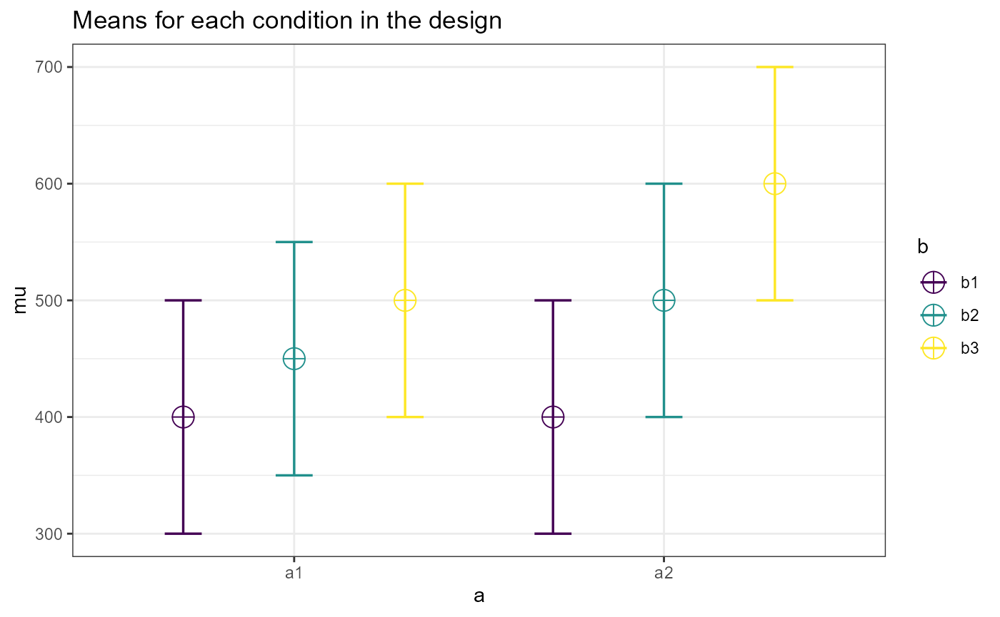
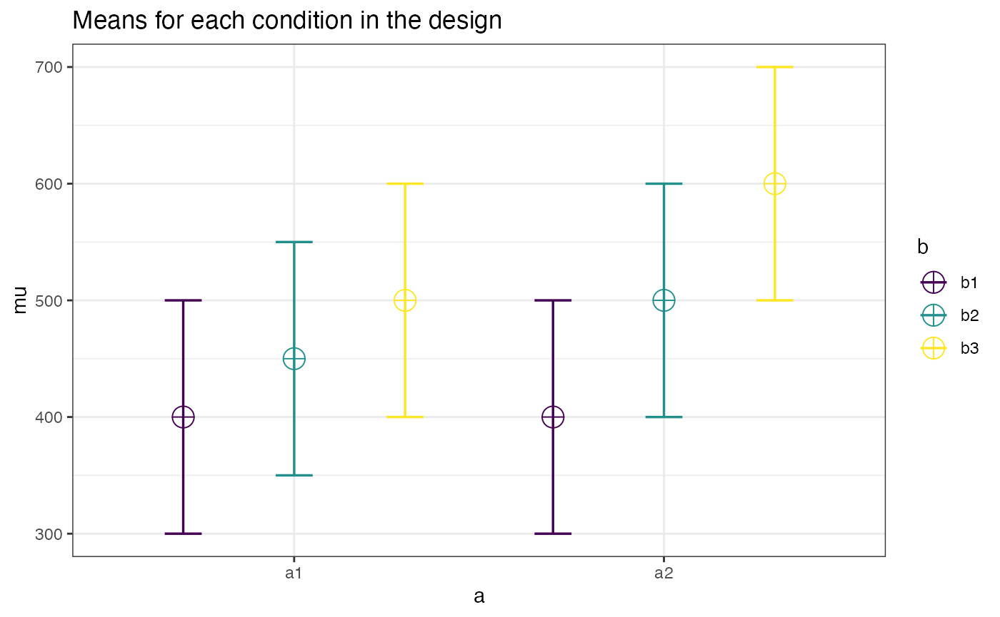

vignettes/ANCOVAs.Rmd
ANCOVAs.RmdRecently, Shieh (2020) demonstrated that most software uses a slightly flawed approach to estimating power for ANCOVAs, and focused on one-way ANOVA designs to compare his method to the method first mentioned by Cohen (1988).
As Shieh (2020) eloquently points out in their simulations, the method of Cohen (1988) overestimates power and the problem is exacerbated by having a high number of covariates with high proportion of the variance (\(R^2\)) explained by the covariates. The problem is worst (30% error between estimated and actual power) in the simulation when there are 10 covariates included in the model when explained variance is approximately 81% (\(\rho = 0.9\)) [Shieh (2020) see Table 3). While this may not seem like much of issue if you don’t expect to encounter this scenario, it still demonstrates the Cohen (1988) method is inconsistent in producing appropriate estimates of power. I believe this is reason enough (when provided with a sustainable and implementable alternative) to abandon the old method of Cohen (1988) for a newer method that provides exact, rather than approximate, estimates of power for ANCOVA.
Thankfully, Shieh (2020) was diligent in his work and
demonstrated, showing both the math and simulations, how a new exact
method could be utilized. The direct method described in the paper is
implemented in the power_oneway_ancova function.
We can copy the example from Maxwell and
Delaney (2004) that Shieh also
used. In this example there are 3 groups with means (mu) of
400, 450, 500 respectively. The error variance is 10000
(sd = 100). Rather than simulating dozens of examples, I
will demonstrate one scenario below where there are 3 covariates, and
the \(R^2\) is equal to 0.5 (treatment
effect excluded). This is demonstrated in Shieh
(2020), Table 2.
For power_oneway_ancova we can demonstrate both the
approximate and exact methods using the type argument. We
can leave the n argument out in order to solve for the
sample size required to reach 80% power. Please notice that
round_up is set to TRUE since we want have a whole number
for sample sizes (rather than a fractional sample size).
power_oneway_ancova(
mu = c(400,450,500),
n_cov = 3,
sd = 100,
r2 = .25,
alpha_level = .05,
#n = c(17,17,17),
beta_level = .2,
round_up = TRUE,
type = "approx"
)#>
#> Power Calculation for 1-way ANCOVA
#>
#> dfs = 2, 42
#> N = 48
#> n = 16, 16, 16
#> n_cov = 3
#> mu = 400, 450, 500
#> sd = 100
#> r2 = 0.25
#> alpha_level = 0.05
#> beta_level = 0.1877374
#> power = 81.22626
#> type = approxNotice that this method requires 3 more subjects in order to achieve a minimum of 80% power.
power_oneway_ancova(
mu = c(400,450,500),
n_cov = 3,
sd = 100,
r2 = .25,
alpha_level = .05,
#n = c(17,17,17),
beta_level = .2,
round_up = TRUE,
type = "exact"
)#>
#> Power Calculation for 1-way ANCOVA
#>
#> dfs = 2, 45
#> N = 51
#> n = 17, 17, 17
#> n_cov = 3
#> mu = 400, 450, 500
#> sd = 100
#> r2 = 0.25
#> alpha_level = 0.05
#> beta_level = 0.1878274
#> power = 81.21726
#> type = exactNow, Shieh (2020) mentioned something very interesting at the end of section 3.
“Although the prescribed application of general linear hypothesis is discussed only from the perspective of a one-way ANCOVA design, the number of groups G may also represent the total number of combined factor levels of a multi-factor ANCOVA design. Hence, using a contrast matrix associated with a specific designated hypothesis, the same concept and process of assessing treatment effects can be readily extended to two-way and higher-order ANCOVA designs.”
Therefore, all that is needed to extend the one-way ANOVA code
provided by Shieh (2020) is to provide the appropriate
contrast matrix for the main effect or interaction ANOVA-level effect
that is desired. Superpower accomplishes this with the
ANCOVA_analytic function which internally uses the
model.matrix function to form the appropriate contrast
matrix.
This function operates similar to the ANOVA_power and
ANOVA_exact functions. However, the
ANCOVA_analytic function doesn’t require the use of
ANOVA_design first and relies upon the closed formulas from
Shieh (2020) rather than a simulation to
calculate statistical power. Please note that unlike the
power_oneway_ancova function there is no option to apply
the approximation from Cohen (1988) for factorial designs.
We can extend the previous scenario with 3 groups to a factorial design with 2 groups across 3 conditions.
# Run function
res1 = ANCOVA_analytic(
design = "2b*3b",
mu = c(400, 450, 500,
400, 500, 600),
n_cov = 3,
sd = 100,
r2 = .25,
alpha_level = .05,
#n = 17,
beta_level = .2,
round_up = TRUE
)
# Print main results
res1#> Power Analysis Results for ANCOVA
#> Total N Covariates r2 Alpha Level Beta Level Power
#> a 102 3 0.25 0.05 0.1897 81.03
#> b 30 3 0.25 0.05 0.1389 86.11
#> a:b 180 3 0.25 0.05 0.1995 80.05The results can also be printed as power.htest objects
by accessing the individual effects in the res1 object.
res1$aov_list$a#>
#> Power Calculation for ANCOVA
#>
#> dfs = 1, 93
#> N = 102
#> n = 17, 17, 17, 17, 17, 17
#> n_cov = 3
#> mu = 400, 450, 500, 400, 500, 600
#> sd = 100
#> r2 = 0.25
#> alpha_level = 0.05
#> beta_level = 0.1897221
#> power = 81.02779
#> type = Exact
res1$aov_list$b#>
#> Power Calculation for ANCOVA
#>
#> dfs = 2, 21
#> N = 30
#> n = 5, 5, 5, 5, 5, 5
#> n_cov = 3
#> mu = 400, 450, 500, 400, 500, 600
#> sd = 100
#> r2 = 0.25
#> alpha_level = 0.05
#> beta_level = 0.1389288
#> power = 86.10712
#> type = Exact
res1$aov_list$ab#>
#> Power Calculation for ANCOVA
#>
#> dfs = 2, 171
#> N = 180
#> n = 30, 30, 30, 30, 30, 30
#> n_cov = 3
#> mu = 400, 450, 500, 400, 500, 600
#> sd = 100
#> r2 = 0.25
#> alpha_level = 0.05
#> beta_level = 0.1994719
#> power = 80.05281
#> type = ExactWe can also check the design by using the plot method.
plot(res1)
However, you may want to compare the power of ANOVA to an ANCOVA. In
that case you can use the ANOVA_design function and pass it
onto the ANCOVA_analytic function. But, this forces you to
set the sample size.
des1 = ANOVA_design( design = "2b*3b",
mu = c(400, 450, 500,
400, 500, 600),
n = 17,
sd = 100)
res2 = ANCOVA_analytic(
design_result = des1,
n_cov = 3,
r2 = .25,
alpha_level = .05,
round_up = TRUE
)
res2#> Power Analysis Results for ANCOVA
#> Total N Covariates r2 Alpha Level Beta Level Power
#> a 102 3 0.25 0.05 0.1897221 81.03
#> b 102 3 0.25 0.05 0.0001954 99.98
#> a:b 102 3 0.25 0.05 0.4701157 52.99User specified contrasts can also be used for a power analysis. These
can be provided in the cmats argument of the
ANCOVA_analytic function or supplied directly to the
ANCOVA_contrast function as an independent test. The
ANCOVA_analytic function requires that the contrasts
matrices are provided as matrices (i.e., as.matrix). The
contrasts can be accessed in the con_list part of the
results and can be named (in this case “test”).
ANCOVA_analytic(design = "2b",
mu = c(0,1),
n = 15,
cmats = list(test = matrix(c(-1,1),
nrow = 1)),
sd = 1,
r2 = .2,
n_cov = 1)$con_list$test#>
#> Power Calculation for ANCOVA contrast
#>
#> dfs = 1, 27
#> N = 30
#> n = 15, 15
#> n_cov = 1
#> contrast = -1, 1
#> mu = 0, 1
#> sd = 1
#> r2 = 0.2
#> alpha_level = 0.05
#> beta_level = 0.1744293
#> power = 82.55707
#> type = Exact
# Same result
ANCOVA_contrast(cmat = c(-1,1),
n = 15,
mu = c(0,1),
sd = 1,
r2 = .2,
n_cov = 1)#>
#> Power Calculation for ANCOVA contrast
#>
#> dfs = 1, 27
#> N = 30
#> n = 15, 15
#> n_cov = 1
#> contrast = -1, 1
#> mu = 0, 1
#> sd = 1
#> r2 = 0.2
#> alpha_level = 0.05
#> beta_level = 0.1744293
#> power = 82.55707
#> type = Exact